2018
| 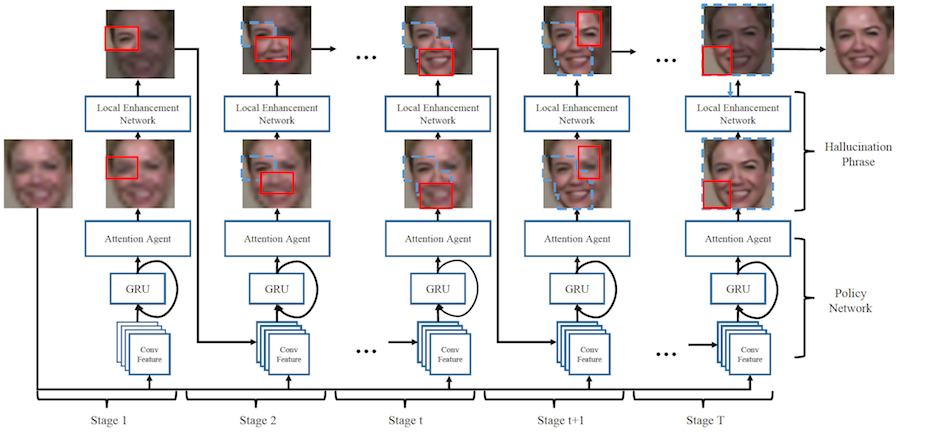 | Yukai Shi, Guanbin Li*, Qingxing Cao, Keze Wang, Liang Lin, "Face Hallucination by Attentive Sequence Optimization with Reinforcement Learning" IEEE Transactions on Pattern Analysis and Machine Intelligence(T-PAMI), 2019. [JCR Rank 1|CCF A] |
| 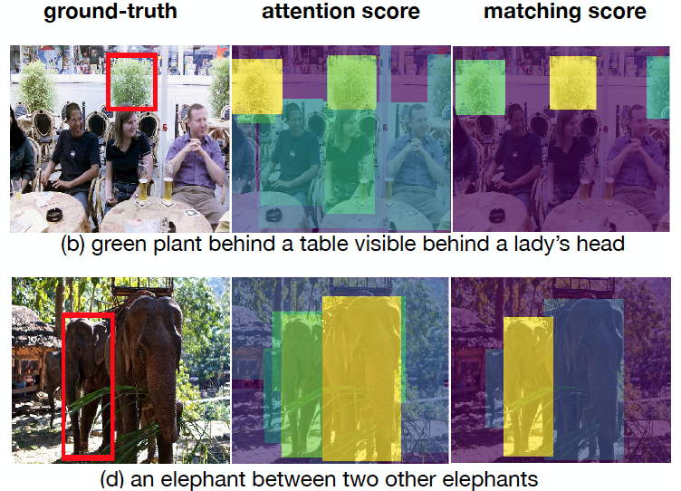 | Sibei Yang, Guanbin Li*, Yizhou Yu, "Cross-Modal Relationship Inference for Grounding Referring Expressions" IEEE Conference on Computer Vision and Pattern Recognition(CVPR), 2019. [CCF A] |
| 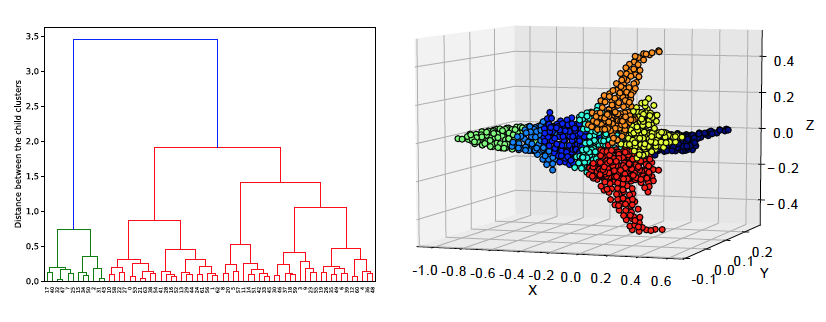 | Chao Chen, Guanbin Li*, Ruijia Xu, Tianshui Chen, Meng Wang, Liang Lin, "CluterNet: Deep Hierarchical Cluster Network with Rigorously Rotation-Invariant Representation for Point Cloud Analysis" IEEE Conference on Computer Vision and Pattern Recognition(CVPR), 2019. [CCF A] |
| 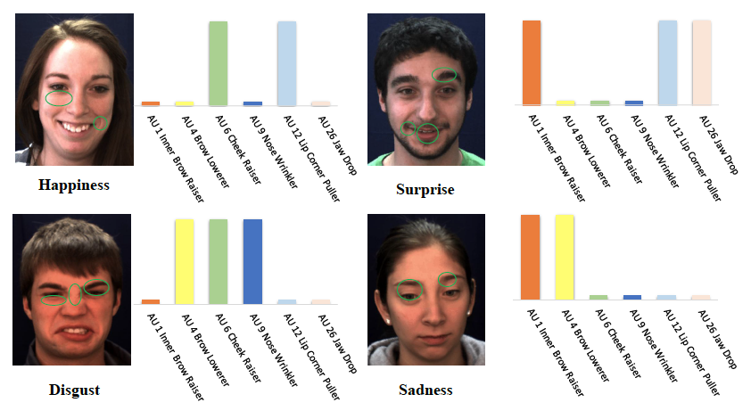 | Guanbin Li, Xin Zhu, Yirui Zeng, Qing Wang, Liang Lin, "Semantic Relationships Guided Representation Learning for Facial Action Unit Recognition" Association for the Advancement of Artificial Intelligence(AAAI), 2019. [CCF A] |
| 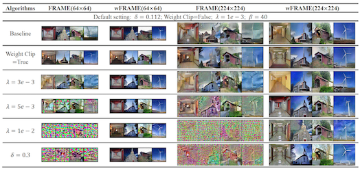 | Xu Cai, Yang Wu, Guanbin Li, Ziliang Chen, Liang Lin, "FRAME Revisited: An Interpretation View Based on Particle Evolution" Association for the Advancement of Artificial Intelligence(AAAI), 2019. [CCF A] |
 |
Xiang He, Sibei Yang, Guanbin Li*, Haofeng Li, Huiyou Chang, Yizhou Yu, "Non-Local Context Encoder: Robust Biomedical Image Segmentation against Adversarial Attacks" Association for the Advancement of Artificial Intelligence(AAAI), 2019. [CCF A] |
| 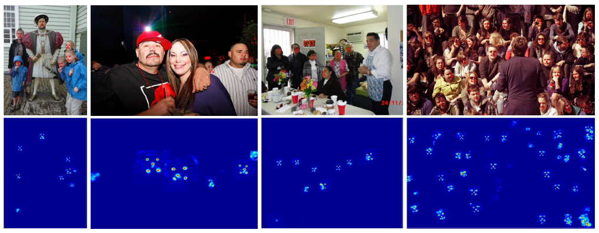 | Lingbo Liu, Guanbin Li*, Yuan Xie, Yizhou Yu, Qing Wang, Liang Lin, "Facial Landmark Machines: A Backbone-Branches Architecture with Progressive Representation Learning" IEEE Transactions on Multimedia(T-MM), 2019. |
| 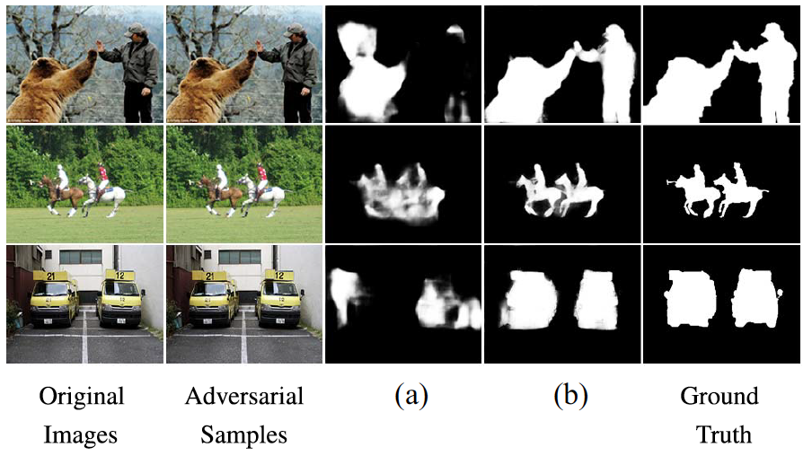 | Haofeng Li, Guanbin Li*, Yizhou Yu, "ROSA: Robust Salient Object Detection against Adversarial Attacks" IEEE Transactions on Cybernetics(T-Cybernetics), 2019. [JCR Rank 1] |
| 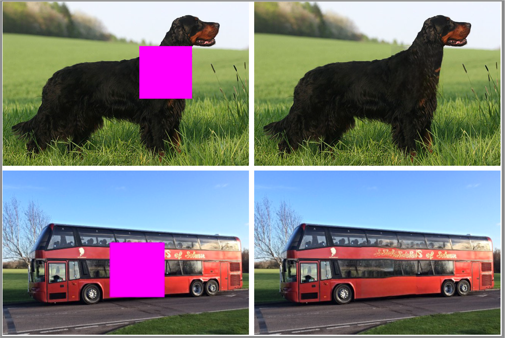 | Haofeng Li, Guanbin Li*, Liang Lin, Yizhou Yu, "Context-Aware Semantic Inpainting" IEEE Transactions on Cybernetics(T-Cybernetics), 2018. [JCR Rank 1] |
| 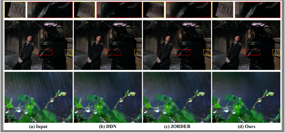 | Guanbin Li, Xiang He, Wei Zhang, Huiyou Chang, Le Dong, Liang Lin, "Non-locally Enhanced Encoder-Decoder Network for Single Image De-raining" ACM International Conference on Multimedia(ACM MM), 2018. [CCF A] |
 |
Lingbo Liu, Ruimao Zhang, Jiefeng Peng, Guanbin Li*, Bowen Du, Liang Lin, "Attentive LSTM Crowd Flow Machines" ACM International Conference on Multimedia(ACM MM), 2018. [CCF A] |
 |
Lingbo Liu, Hongjun Wang, Guanbin Li*, Wanli Ouyang, Liang Lin, "Crowd Counting using Deep Recurrent Spatial-Aware Network" International Joint Conference on Artificial Intelligence(IJCAI), 2018. [CCF A] |
 |
Guanbin Li and Yizhou Yu, "Contrast-Oriented Deep Neural Networks for Salient Object Detection" IEEE Transactions on Neural Networks and Learning Systems(TNNLS), 2018. [JCR Rank 1] |
| 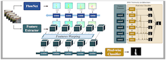 | Guanbin Li, Yuan Xie, Tianhao Wei, Keze Wang, Liang Lin, "Flow Guided Recurrent Neural Encoder for Video Salient Object Detection" IEEE Conference on Computer Vision and Pattern Recognition(CVPR), 2018. [CCF A] |
| 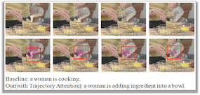 | Xian Wu, Guanbin Li*, Qingxing Cao, Qingge Ji, Liang Lin, "Interpretable Video Captioning via Trajectory Structured Localization" IEEE Conference on Computer Vision and Pattern Recognition(CVPR), 2018. [CCF A] |
| 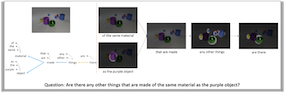 | Qingxing Cao, Xiaodan Liang, Bailin Li, Guanbin Li, Liang Lin, "Visual Question Reasoning on General Dependency Tree" IEEE Conference on Computer Vision and Pattern Recognition(CVPR), 2018. [CCF A] |
| 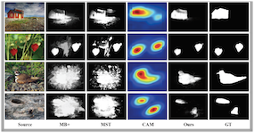 | Guanbin Li, Yuan Xie, Liang Lin, "Weakly Supervised Salient Object Detection Using Image Labels" Association for the Advancement of Artificial Intelligence(AAAI), 2018. [CCF A] |
| 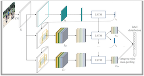 | Tianshui Chen, Zhouxia Wang, Guanbin Li*, Liang Lin "Recurrent Attention Reinforcement Learning for Multi-label Image Recognition" Association for the Advancement of Artificial Intelligence(AAAI), 2018. [CCF A] |
2017
| 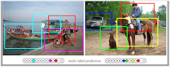 | Zhouxia Wang, Tianshui Chen, Guanbin Li, Ruijia Xu and Liang Lin, "Multi-label Image Recognition by Recurrently Discovering Attentional Regions" International Conference on Computer Vision (ICCV), 2017. [CCF A] |
| 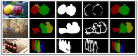 | Guanbin Li, Yuan Xie, Liang Lin and Yizhou Yu, "Instance-Level Salient Object Segmentation" IEEE Conference on Computer Vision and Pattern Recognition (CVPR), 2017. [CCF A] |
| 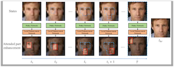 | Qingxing Cao, Liang Lin, Yukai Shi, Xiaodan Liang, Guanbin Li, "Attention Aware Face Hallucination via Deep Reinforcement Learning" IEEE Conference on Computer Vision and Pattern Recognition (CVPR), 2017. [CCF A] |
| 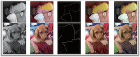 | Wei Zhang, Chaowei Fang, Guanbin Li*, "Automatic colorization with improved spatial coherence and boundary localization" Journal of Computer Science and Technology (JCST), 2017. [CCF B] |
2016
| 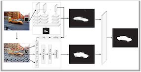 | Guanbin Li and Yizhou Yu, "Deep Contrast Learning for Salient Object Detection" IEEE Conference on Computer Vision and Pattern Recognition (CVPR), 2016. [CCF A] |
| 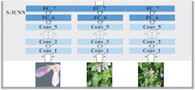 | Guanbin Li and Yizhou Yu, "Visual Saliency Detection Based on Multiscale Deep CNN Features" IEEE Transactions on Image Processing(TIP), 2016. [CCF A] |
| 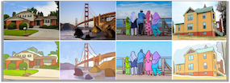 | Guanbin Li, Sai Bi, Jue Wang, Yingqing Xu, and Yizhou Yu, "A Drawing Assistant for Generating Color Sketches from Photos" IEEE Computer Graphics and Applications (CG&A), 2016. |
2015
| 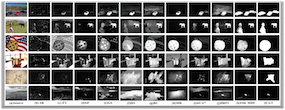 | Guanbin Li and Yizhou Yu, "Visual Saliency Based on Multiscale Deep Features" IEEE Conference on Computer Vision and Pattern Recognition (CVPR), 2015. [CCF A] |